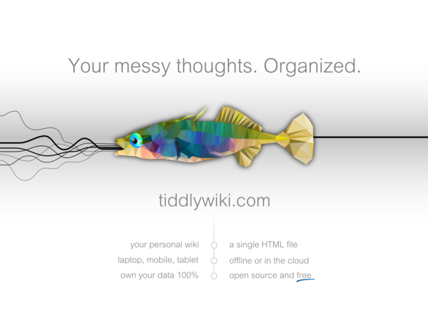

Not Even Odd
Musings and mumblings of a random nerd
Last 10 Posts:
| Tags see all tags | All Posts (alphabetically | chronologically) |
TiddlyWiki (http://tiddlywiki.com) is a small and versatile wiki designed to manipulate and organize microcontent. It is an extremelly malleable system and can even be extended further (using Javascript). TiddlyWiki runs in various ways (either online or offline), the simplest of which is as a single HTML file.
Here is a short introduction to TiddlyWiki 5 by its creator Jeremy Ruston :
What's really interesting is how you can combine microcontent (aka tiddlers in TiddlyWiki's speak). Let me quote the TiddlyWiki's website on this:
The philosophy of tiddlers is that we maximise the possibilities for re-use by slicing information up into the smallest semantically meaningful units with rich modelling of relationships between them. Then we use aggregation and composition to weave the fragments together to present narrative stories.
TiddlyWiki aspires to provide an algebra for tiddlers, a concise way of expressing and exploring the relationships between items of information.
I'm sold! I routinely use TiddlyWiki to keep notes on various topics and organise my thoughts. And I even decided to use it to build this website.

I hope you will try it and adopt it.
Eventually if you care to study it, you will unleash it's enormous power.
Musings and mumblings of a random nerd
Last 10 Posts:
| Tags see all tags | All Posts (alphabetically | chronologically) |